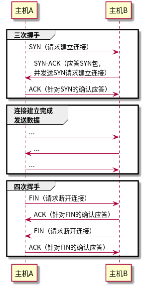

协议
Table of Contents
1 网络分层模型

2 TCP
2.1 三次握手和四次挥手

2.2 MSS最大消息长度
tcp建立连接时，可以确定发送数据包的单位，可以称之为MSS（Maximum Segment Size）。理想的情况是，MSS长度正好是IP中不会被分片处理的最大数据长度。
三次握手中，两端的主机在发出SYN包时，会将MSS写入TCP首部，以告知对方自己接口能够适应的MSS大小。取两者之间的最小值。
2.3 滑动窗口
2.4 TCP状态
2.5 TCP拥塞控制、满启动、快速恢复
2.6 TCP参数控制选项
2.7 TSO/GSO
3 SCTP

4 应用层协议
4.1 quic
4.1.1 定义
- quic packet
- quic packet是指可以被压缩到UDP数据报中的单元. 一个UDP 数据报中可以包含一个或多个quic packet.
- frames
- 协议信息的结构化单元, 有多种类型的frame, 每种包含不同的信息, frame包含在quic packet中.
- connection id
- 用于标识一个QUIC连接,每个端点都会为对端选择一个或者多个Connection ID并将其包含在要发送的数据报中.
- 首次连接
当 Chrome 向之前从未发过请求的服务端发出请求时，它不知道对方是否支持 QUIC，因此先通过 TCP 发送第一个请求。服务器响应该请求以后，要发送 Alt-Svc HTTP 响应头告诉 chrome 它支持 QUIC。 （例如，响应头中 "alt-svc: quic=":443"; ma=2592000; v="44,43,39,35" 告诉 Chrome 服务端支持端口443上的QUIC，且支持的版本号是 44，43，39，35，max-age 为 2592000 秒）。 现在 Chrome 知道服务端支持 QUIC，于是尝试使用 QUIC 来进行下一个请求。发出请求后，Chrome 将采取 QUIC 和 TCP 竞争的方式与服务端建立连接。（建立这些连接，但是不发送请求）如果第一个请求通过 TCP 发出，TCP 赢得竞争，第二个请求将通过 TCP 发出。 在随后的某个时刻，QUIC 如果一旦连接成功，将来所有请求都将通过 QUIC 连接发送。
所以 QUIC 的协议发现过程是通过识别响应头中的特殊字段实现的。
4.1.2 stream
stream是QUIC连接中的有序的单向或者双向通道, 一个quic连接可以同时传输多个stream.
单向流在一个方向上携带数据：从流的发起者到其对端。双向流允许在两个方向上发送数据.
QUIC 允许任意数量的流并发操作，并允许在任何流上发送任意数量的数据，受流控制约束和流限制
4.1.2.1 stream类型和标识
stream在连接中由一个数值标识，称为stream ID。Stream ID 是一个 62 位整数（0 到 262-1），对于quic connecton上的所有stream都是唯一的。Stream ID 被编码为可变长度的整数. QUIC 端点不得在连接中重用Stream ID。
+======+==================================+ | Bits | Stream Type | +======+==================================+ | 0x00 | Client-Initiated, Bidirectional | +------+----------------------------------+ | 0x01 | Server-Initiated, Bidirectional | +------+----------------------------------+ | 0x02 | Client-Initiated, Unidirectional | +------+----------------------------------+ | 0x03 | Server-Initiated, Unidirectional | +------+----------------------------------+ Table 1: Stream ID Types
最低位为0 : client-initiated 最低位为1 : server-initiated 第二位为0 : bidirectional 双向stream 第二位为1 : unidirectional 单向stream
4.1.2.2 stream操作
写数据 结束stream reset stream
读数据 终止读取,并求关闭
4.1.2.3 stream状态
- 发送Stream States
以下展示了stream发送数据到对端的的状态变化:
o | Create Stream (Sending) | Peer Creates Bidirectional Stream v +-------+ | Ready | Send RESET_STREAM | |-----------------------. +-------+ | | | | Send STREAM / | | STREAM_DATA_BLOCKED | v | +-------+ | | Send | Send RESET_STREAM | | |---------------------->| +-------+ | | | | Send STREAM + FIN | v v +-------+ +-------+ | Data | Send RESET_STREAM | Reset | | Sent |------------------>| Sent | +-------+ +-------+ | | | Recv All ACKs | Recv ACK v v +-------+ +-------+ | Data | | Reset | | Recvd | | Recvd | +-------+ +-------+ Figure 2: States for Sending Parts of StreamsReady代表新创建的Stream, 可以从应用程序接受数据. Stream数据可能会在此状态缓存以准备发送.
首次发送STREAM或者STREAM_DATA_BLOCKED帧会使得Stream的发送部分进入”Send“状态, 一个实现可能会选择推迟分配Stream ID，直到它发送第一个 STREAM 帧并进入Send状态，这可以方便Stream优化。
当接受部分被创建时， 对端打开的双向通道的发送部分从“Ready“状态开始。？？？？？？？？？？？？？？
在”Send“状态中，端点在STREAM帧中传输Stream数据（必要时重传）。端点遵循对端设置的流控设置，并继续接受和处理MAX_STREAM_DATA帧。端点如果在”Send“状态下被stream流控阻塞时，会生成STREAM_DATA_BLOCKED帧。
在应用程序指示已发送所有stream数据并发送包含 FIN 位的 STREAM 帧之后，stream的发送端进入”Data Sent“状态，在此状态下，端点仅在必要时重传的stream data，不需要检查流控限制或者为此状态的stream发送STREAM_DATA_BLOCKED帧。直到对端接受到最终的stream offset后才可能受到MAX_FRAME_DATA帧。
一旦所有的stream data全部被确认，stream的发送端进入”Data Recvd“状态，这是一个最终状态。
在”Ready“、”Send“、”Data Sent“状态下，应用程序都可以发信号表示希望放弃stream data的传输。或者端点可能会接受到对端发送的STOP_SENDING帧。两种情况都会导致发送RESET_STREAM帧，使得stream进入”Reset Recvd“状态。
端点可以发送RESET_STREAM帧作为stream的第一帧，这会使得stream的发送部分打开并立即转换到”Reset Recvd“状态。
一旦包含RESET_STREAM的数据包被确认，stream的发送部分进入”Reset Recvd“状态（最终状态）。
- 接受 Stream States
以下显示了从对端接收数据的stream状态。
o | Recv STREAM / STREAM_DATA_BLOCKED / RESET_STREAM | Create Bidirectional Stream (Sending) | Recv MAX_STREAM_DATA / STOP_SENDING (Bidirectional) | Create Higher-Numbered Stream v +-------+ | Recv | Recv RESET_STREAM | |-----------------------. +-------+ | | | | Recv STREAM + FIN | v | +-------+ | | Size | Recv RESET_STREAM | | Known |---------------------->| +-------+ | | | | Recv All Data | v v +-------+ Recv RESET_STREAM +-------+ | Data |--- (optional) --->| Reset | | Recvd | Recv All Data | Recvd | +-------+<-- (optional) ----+-------+ | | | App Read All Data | App Read Reset v v +-------+ +-------+ | Data | | Reset | | Read | | Read | +-------+ +-------+ Figure 3: States for Receiving Parts of Streams对端接受到stream的第一个STREAM、STREAM_DATA_BLOCKED、RESET_STREAM帧而被创建时，流的接收部分被初始化。对于由对端初始化的双向stream，stream的发送部分接收到MAX_STREAM_DATA或者STOP_SENDING帧也会创建接受部分。接受部分的初始状态为”Recv“。
对于双向steram，端点的发送部分初始化后进入”Ready“状态后，接受部分也进入”Recv“状态。
当从对端接收到MAX_STREAM_DATA或者STOP_SENDING帧时，端点打开双向的stream。从未打开的stream接收到MAX_STREAM_DATA帧时，表示对端已经打开stream并提供流控制。从未打开的stream接收到STOP_SENDING帧表示对端不再希望接收此stream的数据。当数据包丢失或者重新排序后，其他帧可能在STREAM或者STREAM_DATA_BLOCKED之前到达。
在创建stream之前，所有相同类型的stream必须创建具有较低编号stream ID。这确保stream的创建顺序在两个端点上是一致的。
在”Recv“状态下，端点接收STREAM和STREAM_DATA_BLOCKED帧。传入的数据被缓存并且可以被重组为正确的顺序以递交给应用程序。随着数据被应用程序消费，缓冲区将变为可用，端点发送MAX_STREAM_DATA帧以允许对端发送更多数据。
当接收到带有FIN的STREAM帧时，就可以得到stream的最终大小，stream的接收部分进入”Size Know“状态。这个状态下端点不再需要发送MAX_STREAM_DATA帧，仅仅接收重传的stream data。
一旦stream的所有数据被接收，接收部分进入”Data Recvd“状态。这可能发生在接收到带有FIN的STREAM帧。在所有数据被接收后，stream的STREAM和STREAM_DATA_BLOCKED可以被丢弃。
”Data Recvd“状态会持续到stream的数据被递送至应用程序。一旦stream data递送完成，stream进入”Data Read“状态（最终状态）。
在”Recv“或者”Size Know“状态接收到RESET_STREAM时，会导致stream进入”Reset Recvd”状态。这可能导致向应用程序递送stream data过程被中断。
有可能在全部stream data被接收完成后，受到RESET_STREAM。类似的，也有可能在受到RESET_STREAM帧后其余的stream data全部抵达。实现可以自由的选择和管理这种情况。
发送RESET_STREAM意味着端点无法保证递送stream data，但是不强制要求在受到RESET_STREAM后不递送stream data。实现方式可能中断递送stream data，丢弃任何未消费的stream data，并通知接收到了RESET_STREAM。如果stream data被接收完整并且缓存等待应用程序读取，RESET_STREAM可能被阻止或者保留。如果RESET_STREAM被阻止，stream的接收部分进入“Data Recvd”状态。
一旦应用程序接收到标识stream被重置的信号，接收部分转换到“Reset Read”状态（最终状态）。
- 允许的帧类型
发送者仅仅发送三种作用与发送者或者接收者状态的帧类型： STREAM， STREAM_DATA_BLOCKED、RESET_STREAM。
发送者在最终状态下（“Data Recvd”或者“Reset Recvd”）不会发送任何帧。发送者在发送RESET_STREAM后不会在发送STREAM或者STREAM_DATA_BLOCKED帧。 接收者可能接收任何状态下可能接收STREAM、STREAM_DATA_BLOCKED、RESET_STREAM类型的帧（由于可能延迟交付携带他们的数据包）。
接收者发送MAX_STREAM_DATA帧和STOP_SENDING帧。
接收者仅仅在“Recv”状态发送MAX_STREAM_DATA帧。接收者在没有收到RESET_STREAM帧之前，可以在任意状态（除了“Reset Recvd”或者“Reset Read”状态）发送STOP_SENDING。在“Data Recvd”状态下发送STOP_SENDING帧没有价值，因为所有stream data都已经接收。发送者可以在任意状态接收MAX_STREAM_DATA和STOP_SENDING类型的帧（由于延迟交付数据包）。
- 双向的Stream状态
双向stream由发送部分和接收部分组成。
实现可以将双向流的状态表示为发送和接收流状态的组合。最简单的模型是在发送或接收部分处于非终止状态时将流显示为“打开”，当发送和接收流都处于终止状态时将流显示为“关闭。
+===================+=======================+=================+ | Sending Part | Receiving Part | Composite State | +===================+=======================+=================+ | No Stream / Ready | No Stream / Recv (*1) | idle | +-------------------+-----------------------+-----------------+ | Ready / Send / | Recv / Size Known | open | | Data Sent | | | +-------------------+-----------------------+-----------------+ | Ready / Send / | Data Recvd / Data | half-closed | | Data Sent | Read | (remote) | +-------------------+-----------------------+-----------------+ | Ready / Send / | Reset Recvd / Reset | half-closed | | Data Sent | Read | (remote) | +-------------------+-----------------------+-----------------+ | Data Recvd | Recv / Size Known | half-closed | | | | (local) | +-------------------+-----------------------+-----------------+ | Reset Sent / | Recv / Size Known | half-closed | | Reset Recvd | | (local) | +-------------------+-----------------------+-----------------+ | Reset Sent / | Data Recvd / Data | closed | | Reset Recvd | Read | | +-------------------+-----------------------+-----------------+ | Reset Sent / | Reset Recvd / Reset | closed | | Reset Recvd | Read | | +-------------------+-----------------------+-----------------+ | Data Recvd | Data Recvd / Data | closed | | | Read | | +-------------------+-----------------------+-----------------+ | Data Recvd | Reset Recvd / Reset | closed | | | Read | | +-------------------+-----------------------+-----------------+ Table 2: Possible Mapping of Stream States to HTTP/2 | Note (*1): A stream is considered "idle" if it has not yet been | created or if the receiving part of the stream is in the "Recv" | state without yet having received any frames.